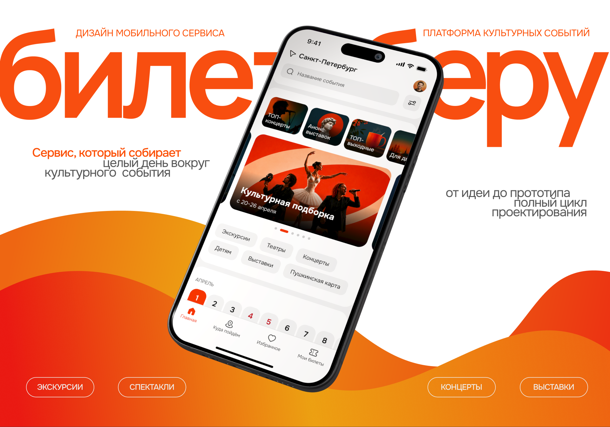
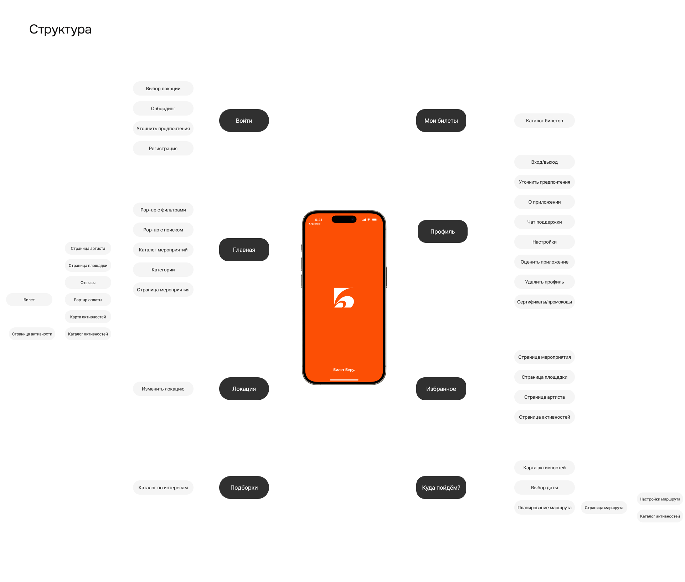
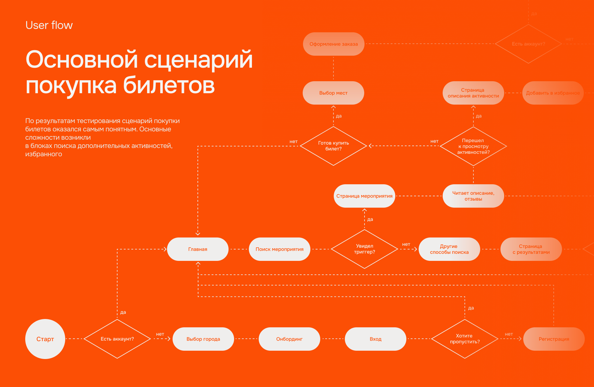
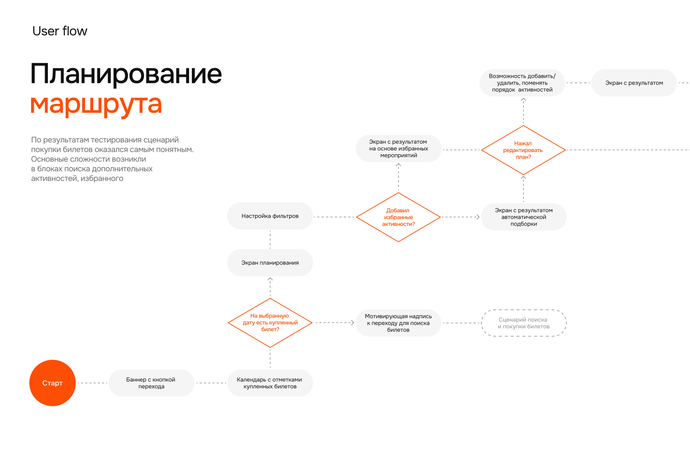
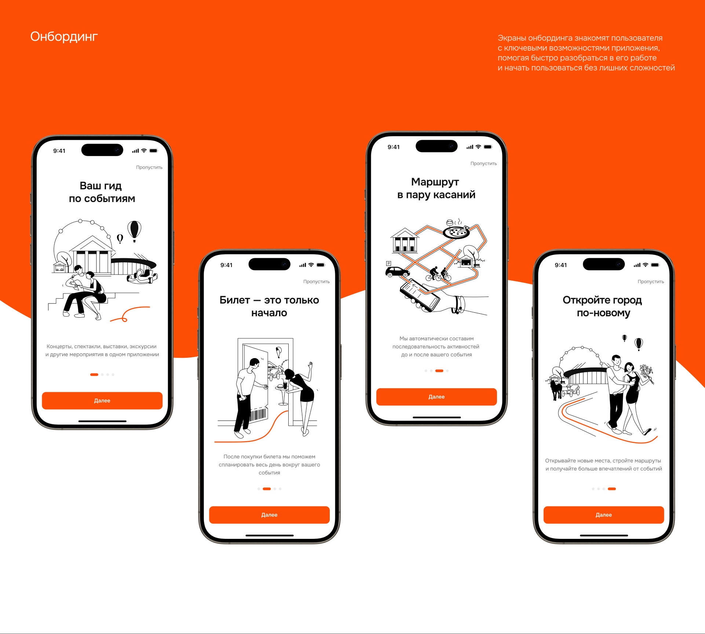

Билет Беру — мобильный сервис для покупки билетов на концерты, спектакли, выставки и экскурсии. Он решает не задачу «купить билет», а задачу «хорошо провести день»: после покупки подбирает места рядом с событием и собирает маршрут.
| Роль | Продуктовый дизайнер, end-to-end: discovery, формулировка возможности и гипотезы, продуктовые решения и скоуп, UX/UI, прототип, юзабилити-тестирование, план итерации |
|---|---|
| Платформа | Мобильное приложение (iOS), в планах Android и Web |
| Исследование | Кабинетное исследование рынка · опрос (76 человек) · 5 JTBD-интервью · 5 конкурентов · CJM · юзабилити-тест (5 человек) с тепловыми картами |
| Инструменты | Figma, Maze, Google Forms |
Кратко
| Проблема | Билет решает только часть задачи. Ужин, прогулку и дорогу пользователь ищет в других сервисах: Афиша → Карты → Кафе → Мессенджер |
|---|---|
| Инсайт | Сразу после покупки пользователь наиболее готов продолжить сценарий — это лучший момент предложить «дополнить день» |
| Решение | Фича «Куда пойдём?»: места рядом с событием, избранное как материал для плана и автоматический маршрут на день, который можно отредактировать |
| Валидация | Покупку прошли 100% участников. Функцию планирования нашли 60%, места рядом с событием — только 40%: ценность есть, но её плохо видно |
| Дальше | Итерация v2: вход в планирование на экране успешной покупки и на главной, карточки мест вместо значков на карте, прозрачная цена |
Артефакты кейса
Исследование: рынок и пользователиКонкурентный анализПерсона, JTBD и Customer Journey MapЮзабилити-тестированиеВизуальный язык и дизайн-система01 · Контекст
Рынок культурных мероприятий растёт и переходит в цифровые каналы. Но приложения проигрывают сайтам: у пользователя нет причины ставить отдельное приложение ради покупки раз в месяц.
| 352 млрд ₽ | 74% | 60% |
|---|---|---|
| объём рынка в 2026 (прогноз), +15% к 2025 | продаж уже в цифровых каналах (64% в 2023) | опрошенных ещё не пользуются приложением для покупки билетов |
Проблема пользователя
В одном приложении нельзя закрыть все задачи, связанные с организацией досуга. Приходится переключаться между сервисами и заново собирать контекст.
Проблема бизнеса
Большая часть пользователей не вовлечена в мобильное приложение. Среди вовлечённых многие бросают покупку, потому что им нужно уйти в другие сервисы.
Задача: придумать фичу, которая автоматически и в контексте предлагает, чем заняться рядом с выбранным мероприятием, и превращает покупку билета в планирование целого культурного маршрута. Результат — динамический прототип для проверки на пользователях.
Аудитория: 25–45 лет, ходят на культурные мероприятия не реже раза в месяц, любят планировать досуг заранее.
02 · Discovery
Чтобы понять, какую задачу на самом деле решает пользователь, я изучил рынок, провёл опрос и JTBD-интервью, разобрал пять конкурентов и собрал CJM. Подробности — на странице Исследование: рынок и пользователи.
| Инсайт | На чём основан | Что это значит для продукта |
|---|---|---|
| Настоящая задача — «провести день», а не «купить билет» | Интервью: Big Job у всех пяти респондентов — «провести выходные / вечер». Задачу собирают из KudaGo, Tripadvisor, Афиши и Карт | Ценность приложения должна выходить за пределы кассы |
| Вокруг события свой контекст | «Купил билет на концерт и хочу спланировать день: где поесть, куда зайти до или после. Никто такую задачу не решает» | Места рядом, дорога и последовательность — часть основного сценария |
| Лучший момент — сразу после покупки | CJM: на этапе подтверждения пользователь доволен и открыт к предложению. Раньше оно отвлекает от основной цели | Предлагать планирование после оплаты, а не до |
| Скрытая комиссия подрывает доверие | 3 из 5 респондентов сами заговорили о сборе, который появляется только в конце. Сбор есть у всех 5 конкурентов | Прозрачная цена — дешёвое отличие от конкурентов |
| Этого не делает никто из конкурентов | Яндекс Афиша, Кассир, МТС Live, Горбилет, Трипстер — планирования вокруг события нет ни у кого | Базовый сценарий покупки берём у лидеров, отличаемся планированием |

Подробнее: Персона, JTBD и Customer Journey Map · Конкурентный анализ
03 · Гипотеза и метрики
Гипотеза. Если сразу после покупки билета предложить собрать день вокруг события из мест рядом и сохранённого избранного, пользователь будет реже уходить в сторонние сервисы и чаще возвращаться в приложение до даты события. Это повысит вовлечённость в приложение и снизит число брошенных покупок.
Как измеряли бы после запуска (план, в прототипе не проверялся)
| Метрика | Тип | Почему именно она |
|---|---|---|
| Доля покупок, после которых построен маршрут | Главная метрика фичи | Показывает, что планирование стало частью сценария покупки |
| Конверсия со страницы события в оплату | Защитная | Места рядом не должны отвлекать от покупки |
| Доля брошенных оформлений | Бизнес | Проверяет, стали ли реже уходить в сторонние сервисы |
| Возвраты в приложение между покупкой и событием | Вовлечённость | Отвечает на проблему «приложение открывают только ради билета» |
| Доля планов, которыми поделились | Виральность | Решение о дне принимают вдвоём — план отправляют партнёру |
04 · Продуктовые решения
1. Вход в планирование — после покупки
Предложение «дополнить день» появляется тогда, когда пользователь уже решил основную задачу. Если показывать его раньше, на странице события, оно конкурирует с покупкой. Отдельная вкладка «Куда пойдём?» в таб-баре даёт повторный вход.
2. Места рядом — прямо на странице события
Карта и подборка мест рядом с площадкой убирают переключение в Карты: пользователь сразу видит, что ещё успеет сделать в этот день.
3. Избранное — основа для маршрута
Сохранение места не просто «лайк»: из избранного потом собирается план дня. Так сохранение приводит пользователя к ключевой фиче.
4. Сначала готовый маршрут, потом правки
Вместо пустого конструктора приложение сразу строит маршрут, а пользователь убирает лишние точки, добавляет новые и меняет порядок. Это отвечает на барьер из CJM: «страшно не разобраться, сложно настраивать».
5. Базовый сценарий покупки не изобретаем заново
Поиск и покупка — по образцу Кассира, выбор мест и оплата — Горбилета. Все отличия продукта — в планировании, а не в сценарии покупки.
Скоуп прототипа
Вошло в прототип
- Поиск, каталог, подборки по интересам
- Страница события с местами рядом и картой
- Выбор мест и оплата
- Избранное: события, площадки, артисты, места
- «Куда пойдём?»: календарь, маршрут, редактирование, «Поделиться»
- Онбординг, который объясняет новую ценность
Отложено в бэклог
- Красивое оформление подарочных билетов
- Рецензии критиков
- Вид на сцену с выбранного места
- Офлайн-режим билета
Эти идеи из интервью и CJM полезны, но не относятся к основной задаче «провести день» и не проверяют гипотезу.
05 · Решение
Информационная архитектура
Четыре вкладки в таб-баре: Главная, Куда пойдём?, Избранное, Мои билеты. Планирование — отдельная вкладка первого уровня, а не пункт в профиле.

Основной сценарий — покупка билета
Главная → поиск → страница события → места рядом (можно сохранить в избранное) → выбор мест → оплата → билет → добавить в календарь или поделиться.

Ключевая фича — «Куда пойдём?»
1. Выбор события. Пользователь покупает билет и переходит к планированию остальной части дня.
2. Подбор мест. Приложение предлагает рестораны, прогулки, выставки рядом с событием.
3. Сборка маршрута. Понравившиеся места добавляются в план, приложение выстраивает удобную последовательность.
4. Готовый день. Цельный маршрут на день, отдельные места можно сохранить в избранное.
5. Редактирование. Убрать точки, добавить новые, поменять порядок.
6. Поделиться. Отправить план партнёру и договориться о деталях.
Логика: календарь показывает даты с купленными билетами. Если на выбранную дату билета нет — приложение предлагает найти событие. Если есть — строит маршрут из избранного или подбирает места автоматически, а пользователь его редактирует.

От вайрфреймов к интерфейсу
Логику проверил на ч/б вайрфреймах и интерактивном прототипе, затем перевёл в финальный UI на базе дизайн-системы.
Онбординг, который продаёт новую ценность
Четыре экрана объясняют, чем приложение отличается от обычной кассы: «Ваш гид по событиям» → «Билет — это только начало» → «Маршрут в пару касаний» → «Откройте город по-новому».

Бренд, типографика, палитра и иконки — на странице Визуальный язык и дизайн-система.
06 · Валидация
Модерируемое юзабилити-тестирование: 5 участников 25–35 лет, 2 сценария, 6 задач, тепловые карты в Maze.
| 100% | 80% | 60% | 40% |
|---|---|---|---|
| купили 2 билета на спектакль | построили план на выходной из избранного | нашли функцию «Куда пойдём?» | нашли места рядом с событием |

Главный вывод: проблема в находимости, а не в механике. Сценарий покупки понятен всем. Построить план смогли 4 из 5 участников, но найти вход в планирование и места рядом без подсказки удалось не всем. Новой ценности нужна лучшая заметность и связь с моментом покупки.
Полные результаты, цитаты и разбор по кластерам — на странице Юзабилити-тестирование.
07 · Итерация v2
| Что увидели на тесте | Что меняем | Какую метрику двигаем |
|---|---|---|
| Вход в планирование воспринимается как абстрактный раздел | Карточка «Дополните ваш вечер» на экране успешной покупки и CTA «Спланировать день» на главной; маршрут привязан к дате билета | Доля покупок с построенным маршрутом |
| Значки на карте не объясняют, зачем туда идти | Карточки мест: название, тип, расстояние, фото; явный блок «Места рядом»; метро и транспорт | Нахождение мест рядом (сейчас 40%) |
| Иконку сохранения путают со «скачать» и «поделиться» | Привычная закладка, подпись «В избранное», подтверждение после нажатия | Добавление в избранное (сейчас 60%) |
| Сервисный сбор появляется только при оплате | Итоговая цена со сбором видна с первого экрана выбора мест | Доля брошенных оформлений |
| План выглядит как абстракция | Маршрут как цепочка шагов со временем; шаблоны на 3 и 4 часа; фильтры по типу, времени и локации | Доля завершённых планов |
08 · Итоги
Что получилось
- Найдена незанятая ниша: ни один из 5 конкурентов не помогает спланировать время вокруг события
- Сформулированы гипотеза и метрики, которыми её можно проверить после запуска
- Основной сценарий покупки прошли 100% участников теста
- Тест показал, где именно новую ценность плохо видно, — отсюда конкретный план v2
Следующие шаги
- Собрать v2 и повторить тест на тех же задачах
- После запуска — A/B-тест точки входа в планирование: экран покупки или главная
- Адаптация под Android и Web